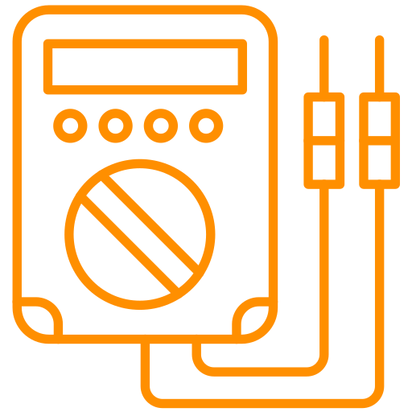
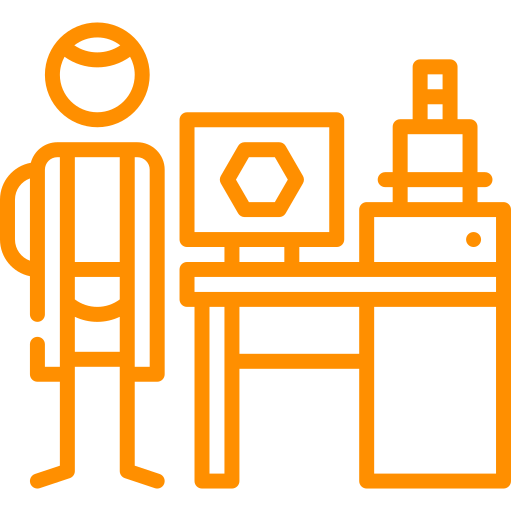

Desarrollo de software
Capacidad para crear programas que resuelven necesidades específicas.
La carrera de Técnico en Programación forma estudiantes capaces de desarrollar software, aplicaciones web y móviles, así como administrar bases de datos en distintos sistemas de información. A lo largo de su formación, adquieren conocimientos, habilidades y valores que les permiten resolver problemas tecnológicos con responsabilidad y autonomía.


La formación que ofrece la carrera de Técnico en Programación permite al egresado, a través de la articulación de saberes de diversos campos, realizar actividades dirigidas a diseñar, codificar e implementar software de sistemas informáticos; emplear frameworks y aplicar metodologías ágiles para el desarrollo de software; implementar bases de datos relacionales y no relacionales en un sistema de información; construir e implementar aplicaciones web; por último, diseñar e implementar aplicaciones móviles multiplataforma.
Durante el proceso de formación de los cinco módulos, la y el estudiante desarrollará o reforzará las siguientes competencias laborales:
Curricular

Capacidad para crear programas que resuelven necesidades específicas.
Habilidad para diseñar y desarrollar aplicaciones para internet y dispositivos móviles.
Organización, almacenamiento y administración de información digital.

Análisis y solución eficiente de fallas o requerimientos informáticos.
Colaboración con otros y uso de la lógica para desarrollar soluciones efectivas.